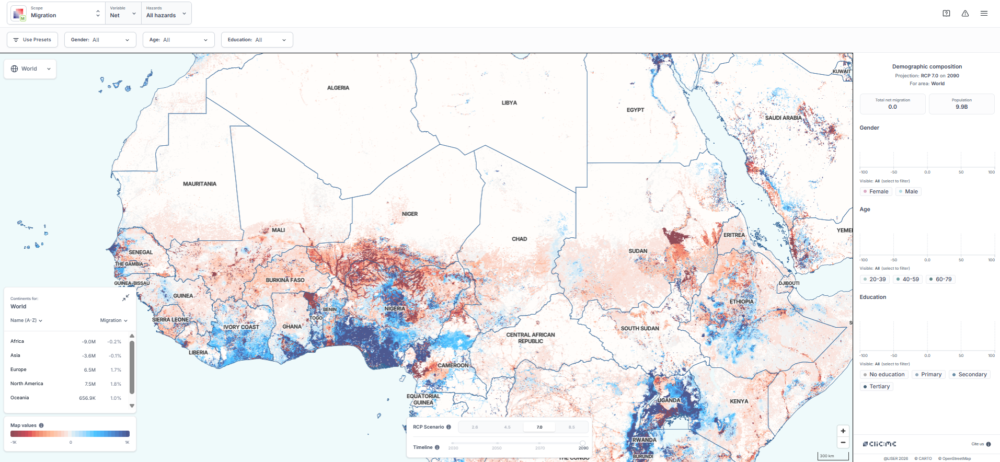

Doctoral Researcher · Migration Economics
I study how climate change
affects migration and poverty around the globe.
How does climate change affect migration, GDP and poverty around the globe? Who suffers the most under climate change? Who will move? Do they have the means to relocate? How many people will move? Where do they go? Do people move across borders, or mostly within their own countries?
 Your photo →
Your photo →assets/img/portrait.jpg
I'm a PhD candidate in Economics at LISER researching how climate change shapes migration and what that means for economic outcomes. I build a global panel dataset of region-to-region migration flows broken down by socio-demographic groups, and use structural modeling to quantify climate-induced migration and its effects on GDP, poverty, and welfare. My dissertation, Essays in Modelling Climate Migration, is supervised by Frédéric Docquier and Michał Burzyński.
Before this I was at the University of Barcelona, and I hold a master's degree in economics from the University of Barcelona and a bachelor's degree in economics from the University of Luxembourg.
Interests: Migration, Growth, Spatial Models.
CliC:ME — Climate Change: Migration Economics
LISER
An interactive dashboard that maps how climate change drives migration around the world.
CliC:ME visualizes climate-induced relocation trends — how rising sea levels, extreme weather, and heat exposure reshape where people can live and where they move. It brings the economics of climate migration into a form anyone can explore.
The leader of the project is Michał Burzyński (LISER).

-
2026
Joyeuse Entrée of the Grand Duke
LISER, Luxembourg · 2026.
-
2026
Climate Change and Health: Challenges and Opportunities for Luxembourg
Climate Policy Observatory, Luxembourg · 2026.
-
WIP
Will the Green Transition Deepen Regional Divides? Evidence from Mobility Intentions across European Regions.
Working paper · under review.
-
WIP
Immobility Turns Climate Exposure into Poverty.
Work in progress.
-
2025
The Green Transition: Regional Vulnerability, Opportunity and Migration — Evidence from a Nested Logit Model.
Master’s thesis, Universitat de Barcelona, 2025.
Please find below my CV.
Download CV (PDF) ↓